This piece documents my shift in daily activities due to COVID-19 from March 13 to March 26. Each emoji animation is a visual representation what I did throughout the day while transitioning to isolation, and how those activities could have contributed to the potential spread of the virus. Click animation to enter.


 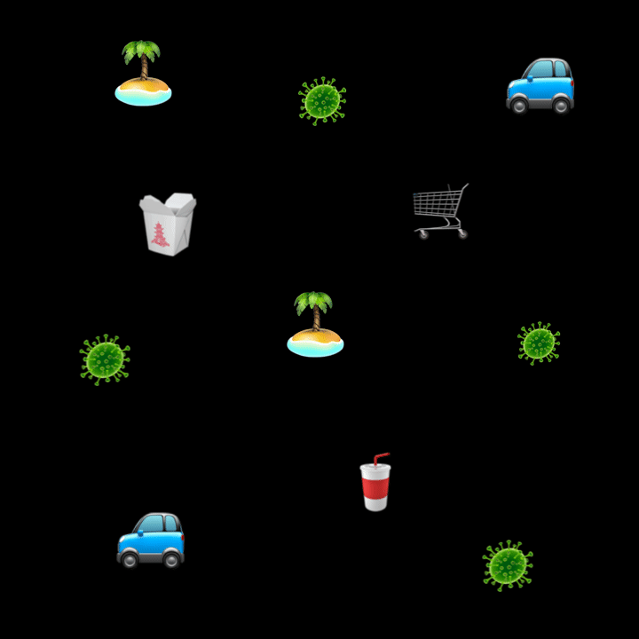
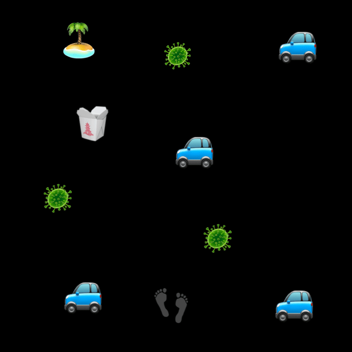
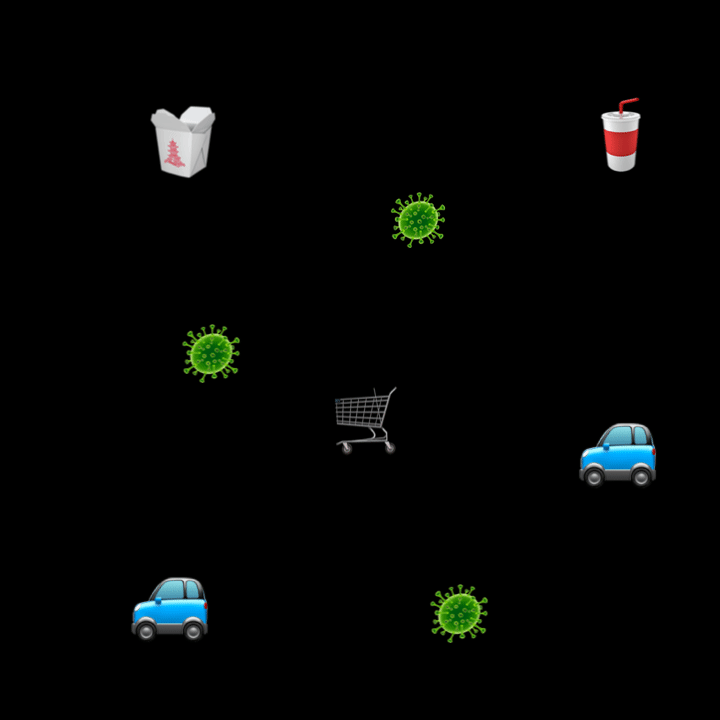
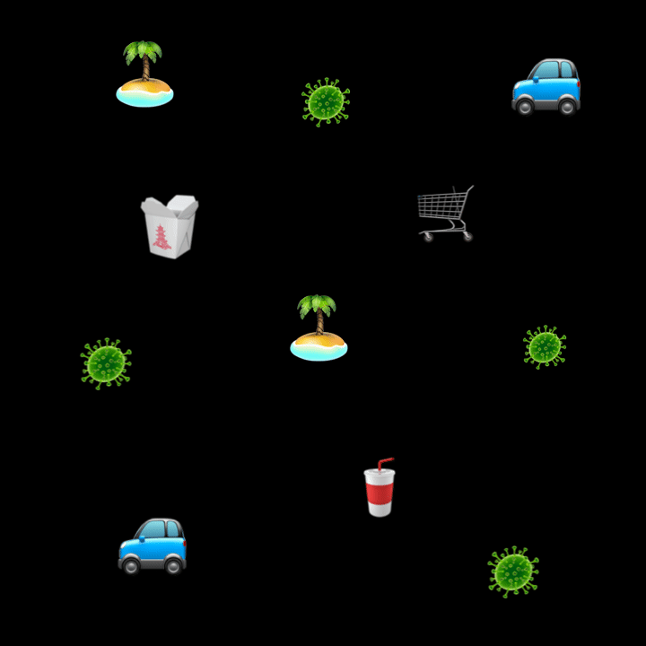
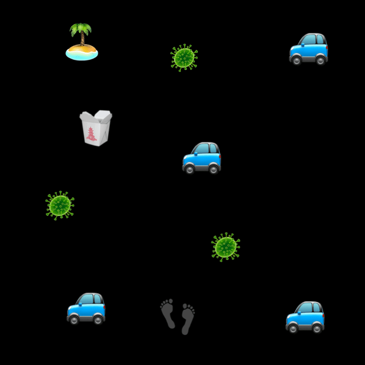
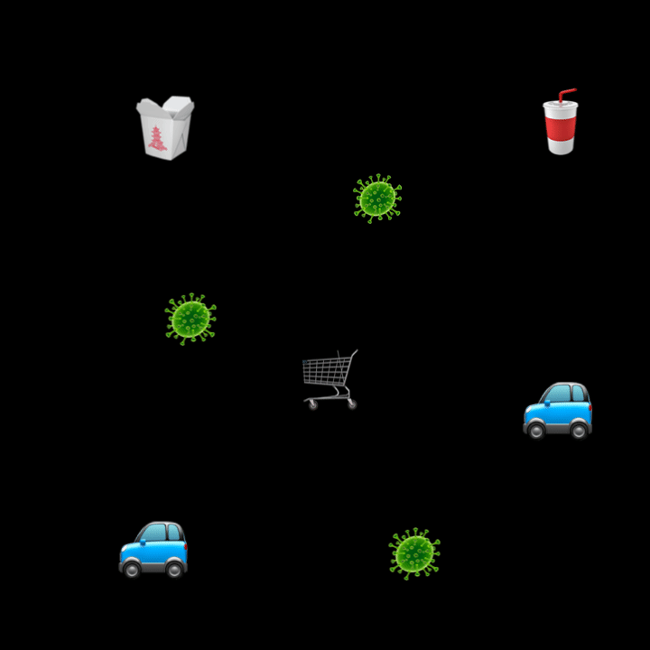
 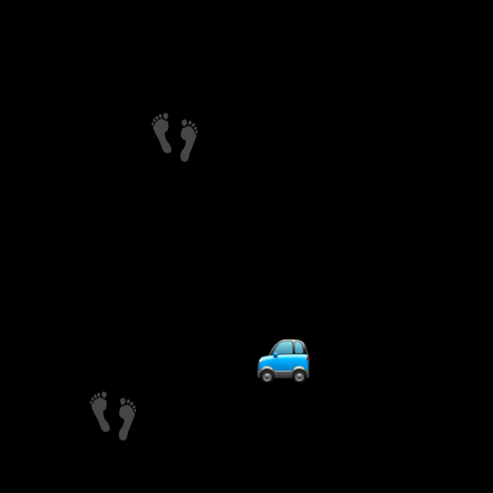
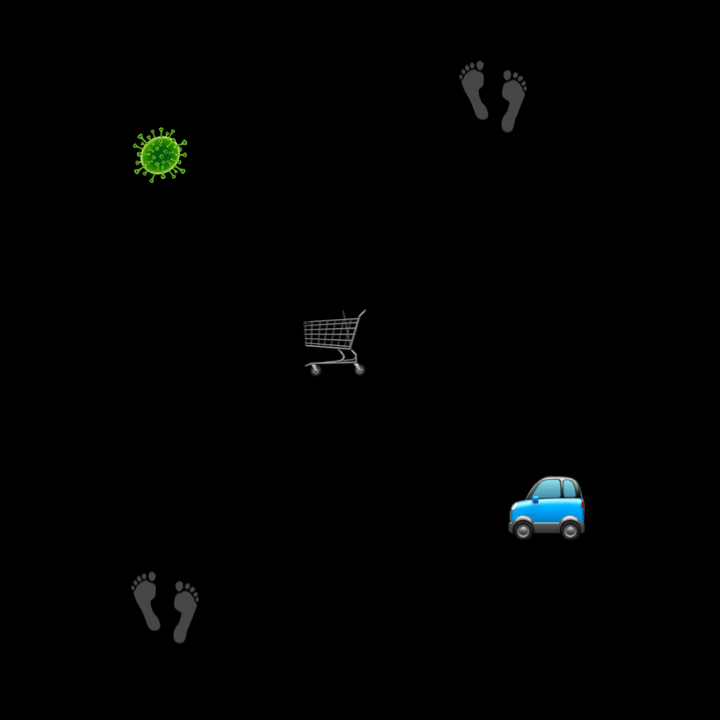
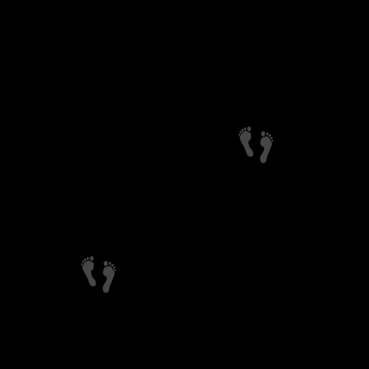
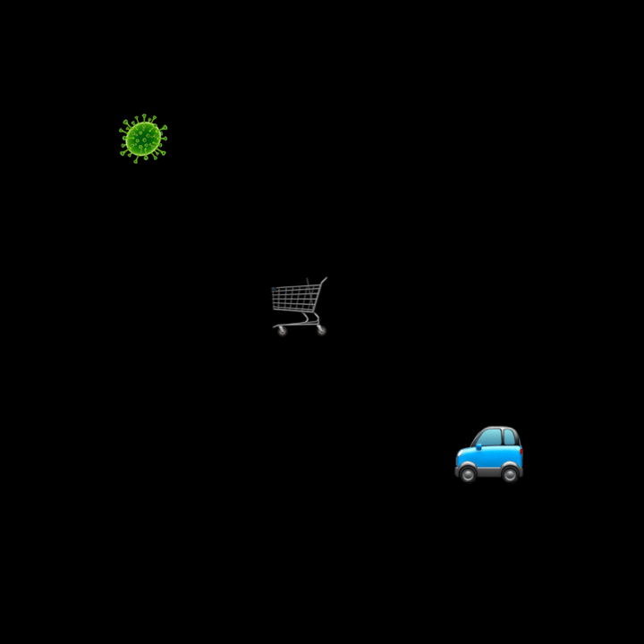
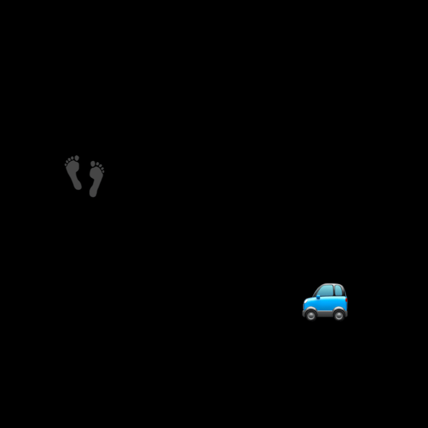
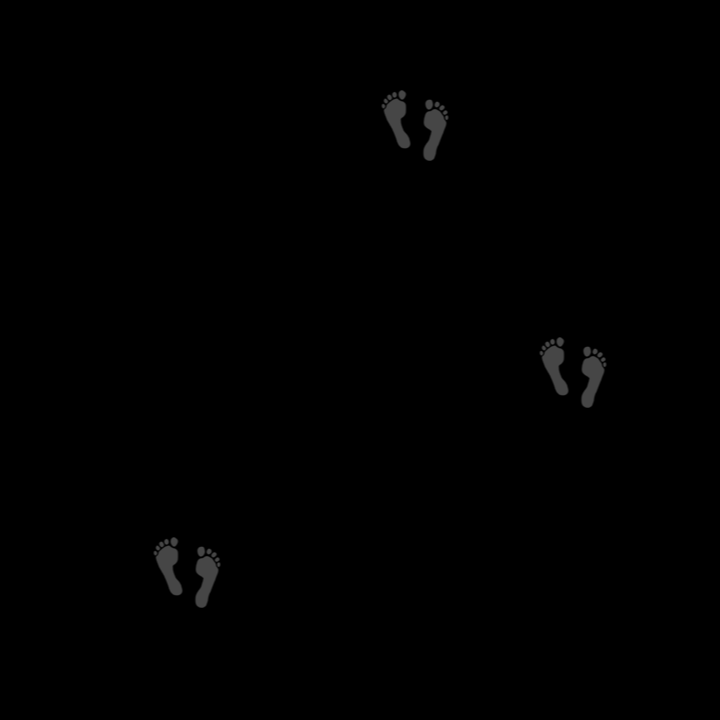
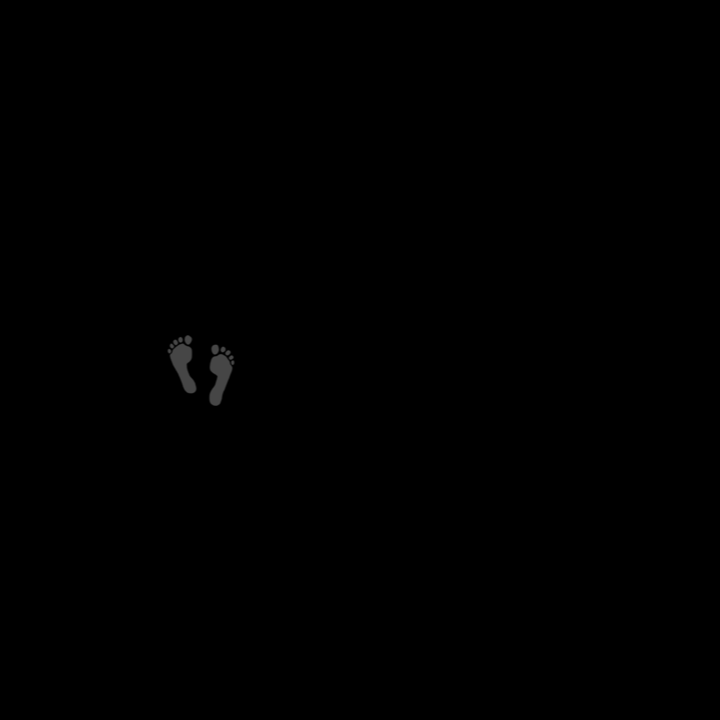
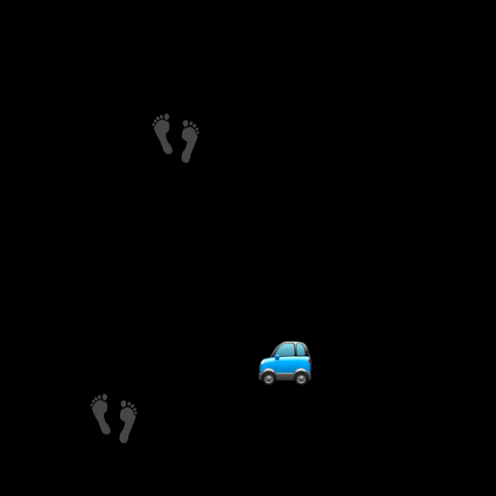
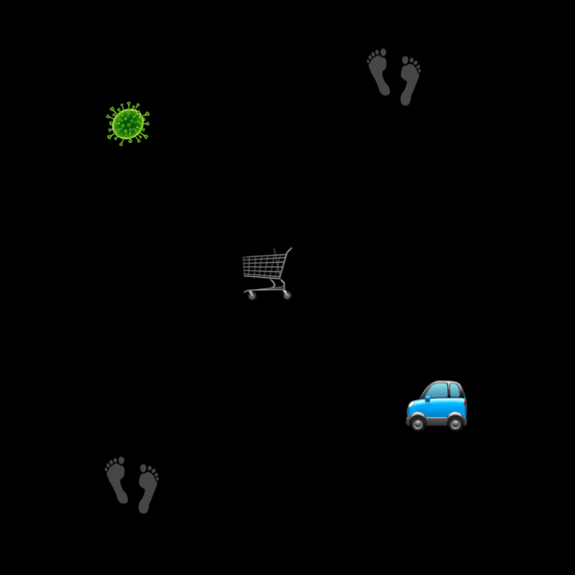
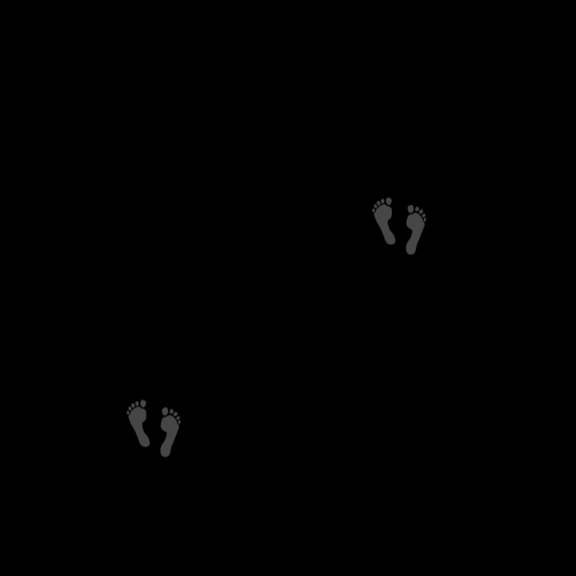
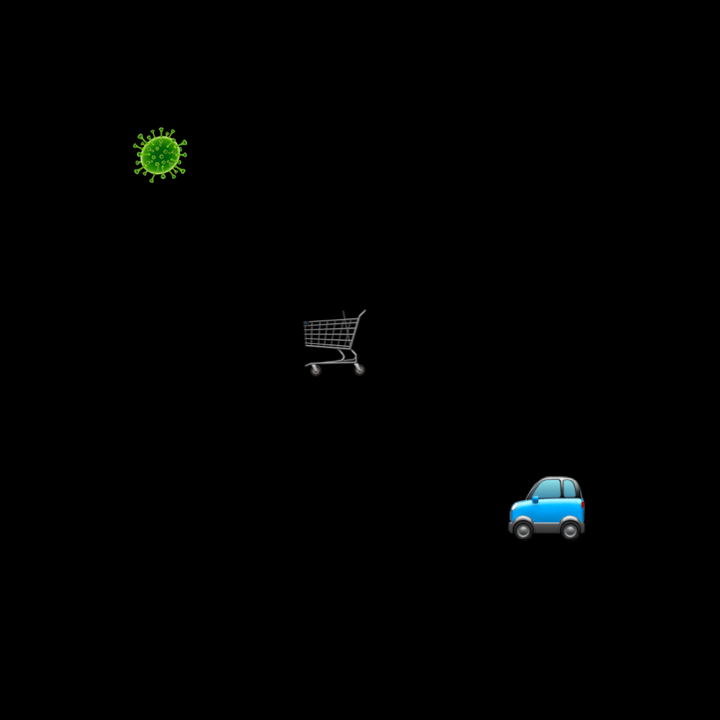
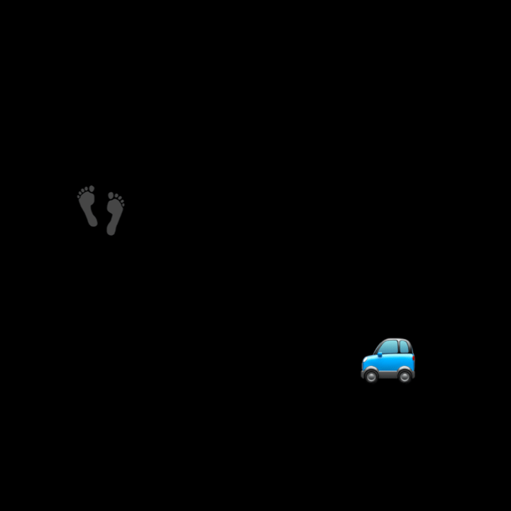
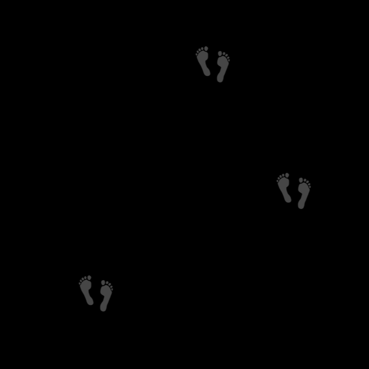
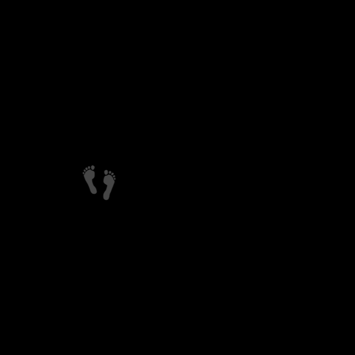